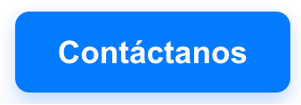

- Inicia sesión como agente y supervisor en el portal: desktop.wxcc-us1.cisco.com. Selecciona el equipo: "Team-Educacion" y gestiona las llamadas como: "Desktop" para utilizar WebRTC. Las credenciales se encuentran en la página de inicio.
- Simula una interacción de cliente a través de los siguientes medios:
-
Página Web (Chat): https://collabcisco.github.io/collabmex/educacion/index.html (Encontrarás el botón

en la parte superior derecha que te dirigirá a todos los medios de contacto listados.) -
Teléfono: +1 424 4471 254 (opción 6)
-
WhatsApp: +1 408 676 4583 (collabmex → Educacion)

-
Email: wxconnect.demo@gmail.com
-
-
Muestra cómo el Agente de IA responde y automatiza tareas (lo puedes hacer vía telefónica, WhatsApp y web chat):
-
Respuestas a preguntas frecuentes
- ¿La universidad tiene validez oficial?
- ¿Puedo estudiar en línea?
- ¿Hay becas disponibles?
- ¿Necesito presentar examen de admisión?
- ¿Puedo revalidar materias?
- ¿Existen intercambios internacionales?
- ¿Cuánto dura una licenciatura?
- ¿Hay bolsa de trabajo?
- ¿Qué modalidades de pago aceptan?
- ¿Puedo trabajar y estudiar?
-
Consulta de Oferta Académica
- ¿Qué carreras de Ingeniería ofrecen?
- ¿Tienen Ingeniería en Inteligencia Artificial?
- ¿Qué posgrados están disponibles?
- ¿Cuánto cuesta la inscripción a una maestría?
- ¿En qué campus puedo estudiar Licenciatura en Mercadotecnia Digital?
- ¿Qué áreas de especialización tiene Ingeniería en Sistemas Computacionales?
-
Agendar Asesoría Académica
Para ver en tiempo real cómo se agenda la asesoría, puedes acceder al: Dashboard de Asesorías Académicas
- Pide al agente agendar una asesoría académica.
- El agente te preguntará tu matrícula; proporciona tu matrícula ej. C10, C12, etc...
- Una vez identificado, el agente te preguntará la fecha deseada y el motivo de la asesoría.
- Confirma la asesoría.
- Recibirás la confirmación en tu correo electrónico y/o WhatsApp con los detalles de tu cita.
- Podrás iniciar la asesoria usando Instant Connect, el link del profesor y alumno los encontrarás en el dashboard
-
Pedir Información de una Asesoría
- Pide al agente información sobre tu asesoría agendada.
- El agente te pedirá tu matrícula y te proporcionará los detalles de tu asesoría.
Para validar la información, puedes consultar las asesorías en el: Dashboard de Asesorías Académicas
-
Cancelar una Asesoría Académica
- Pide al agente cancelar una asesoría académica.
- El agente te pedirá tu matrícula para identificarte.
- Una vez identificado, el agente mostrará tu asesoría agendada.
- Confirma la cancelación.
- Recibirás la confirmación de cancelación en tu correo electrónico y/o WhatsApp.
-
-
Escala la interacción al Agente Humano y demuestra las tareas simplificadas:
-
Personalización de la pantalla del agente
La interfaz del agente puede ser personalizada con el nombre y logo de la institución educativa para una experiencia de marca consistente.
-
Transcripción y resumen con AI Assistant
Visualiza la transcripción de la interacción del AI Agent con el estudiante o prospecto y el resumen de la conversación con el AI Assistant.
-
Información del Cliente y su Historial de Asesorías
El agente tendrá la información del estudiante o prospecto, incluyendo su historial de asesorías académicas, tomada de un CRM o base de datos institucional.
-
Botones de control de llamada/interacción digitales
- Funcionalidades de los botones de control de llamada:
- Poner en espera
- Realizar conferencias
- Transferir llamadas
- Pausar la grabación
- Para canales digitales, se incluyen botones de conferencia y transferencia.
- Funcionalidades de los botones de control de llamada:
-
Integración de sistemas y páginas web
La interfaz del agente integra sistemas y páginas web relevantes, como el dashboard de asesorías académicas,
-
Customer Journey del cliente y Notificaciones Proactivas
- Visualiza el historial completo de interacciones del estudiante o prospecto a través de distintos canales y las actividades relacionadas con sus asesorías académicas.
- El agendamiento o cancelación de asesorías se reflejará automáticamente en el Customer Journey. Cuando se registre un cambio, se enviará una notificación al cliente por correo y/o WhatsApp.
Accede al Dashboard de Asesorías Académicas
-
Correo electrónico de salida
Envía correos electrónicos directamente desde la plataforma para una comunicación fluida con el estudiante o prospecto, incluyendo confirmaciones de asesorías o información académica.
-
Reportes de Desempeño de los Agentes
El Agente podrá acceder al widget de APS (esta información es tomada del Analyzer) para visualizar los reportes de desempeño de los agentes.
-
- Muestra la experiencia del Supervisor y demuestra la visibilidad de la operación en tiempo real.
-
Dashboard Inicial
Muestra en tiempo real las interacciones de los estudiantes y prospectos en las distintas colas (asesorías, admisiones, información académica) y el nivel de servicio.
-
Monitoreo de Agentes
Monitorea actividades de los agentes. En las interacciones de voz podrás escuchar las conversaciones o hacer barge in y también escuchar las grabaciones. También podrás ver el customer journey del cliente.
-
Reportes de Desempeño de los Agentes
El Supervisor podrá acceder al widget de APS (esta información es tomada del Analyzer) para visualizar los reportes de desempeño de los agentes.
-
- Accede al panel de reportes para mostrar cómo se visualiza la actividad y la eficiencia operativa.
Accede a Analyzer con tus credenciales de Supervisor